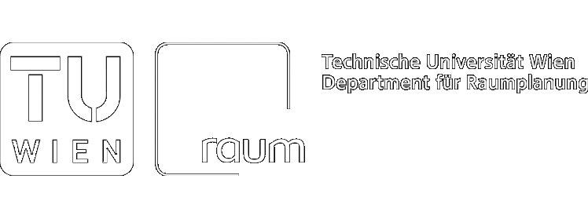

Diplomarbeiten aus Architektur und Raumplanung


Ort
Erzherzog-Johann-Platz 1
1040 Wien
Öffnungszeiten
Mo–So, 12–19 Uhr
Soziale Medien
Facebook
Die archdiploma findet im Herbst 2017 zum zehnten Mal statt. Im biennalen Rhythmus zeigt die Fakultät für Architektur und Raumplanung in dieser Ausstellung Diplomarbeiten beider Studienrichtungen aus zwei Jahren.
Im Zuge der Archdiploma 2017 betrachtet das KuratorInnenteam jene siebenhundertsiebenundsiebzig Diplomarbeiten, die zwischen März 2015 und Jänner 2017 abgeschlossen wurden, als Universum. Es zeigt ein vielfältiges Spektrum an Themen, Zugängen und Methoden: In stadt- und raumplanerischen Arbeiten, architektonischen Entwürfen, Materialexperimenten und 1:1-Interventionen werden diverse soziale und räumliche Kontexte erschlossen und Maßstäbe bearbeitet. Das Universum aus Diplomarbeiten ist Spiegel der Fakultät sowie der Ausbildung an ihr. Als solches verrät es viel über das Studium sowie darüber worin angehende ArchitektInnen und PlanerInnen ihre Aufgabe sehen.
Die Archdiploma 2017 zeigt Diplomarbeiten, die sich in besonderem Maße auszeichnen. Sei es beispielsweise durch eine besondere Bearbeitungstiefe, die Brisanz des gewählten Themas oder den Anspruch Grenzen auszuloten. Mit der diesjährigen archdiploma werden neben Diplomarbeiten vor allem auch Persönlichkeiten in den Fokus gerückt. AusstellerInnen werden nach persönlicher Motivation, Antrieb und Haltung gefragt. In Ausstellung und Katalog entsteht auf diese Weise eine Collage aus fachlichen und persönlichen Inhalten, die Aufschluss über Ansprüche, Werte und Überzeugungen einer künftigen Generation von ArchitektInnen und PlanerInnen gibt.
Die Archdiploma 2017 wurde im Winter- und Sommersemester in die Lehre eingebunden. Gegenstand waren Kriterien für den Selektionsprozess/das Auswahlverfahren sowie der Ausstellungsraum.
KuratorInnen
Thomas Amann
Alexander Hagner
Teresa-Elisa Morandini
Kurt Weninger
Studienassistentin
Sarah Bernhard
Gestaltung
Process
Veranstaltungen
Zur archdiploma findet ein Veranstaltungsprogramm statt, welches Inhalte der Ausstellung auf einer diskursiven Ebene aufgreift und zum Gegenstand von Debatten, Workshops und Lehrveranstaltungen macht.
12. Oktober, 19 Uhr
Vernissage
Die archdiploma feiert Jubiläum! Bereits zum zehnten Mal werden Diplomarbeiten, die an der Fakultät für Architektur und Raumplanung erarbeitet wurden, ausgestellt. Zu sehen ist ein breites Spektrum, von stadt- und raumplanerischen Strategien über architektonische Entwürfe und Umsetzungen bis hin zu theoretischen Auseinandersetzungen, das unterschiedlichste Themen und Zugänge sichtbar macht. Die Archdiploma 2017 versteht sich als Plattform, um über Ausbildung, das Berufsfeld sowie Werte und Haltungen künftiger ArchitektInnen und PlanerInnen zu diskutieren.
13. Oktober, 19 Uhr
Architekturstudium > Fachhochschule oder Universität oder beides?
Welche akademische Ausbildung brauchen Architektinnen und Architekten (in) der Zukunft?
Letztes Jahr sorgte die Frage, ob eine Universität überhaupt die richtige Einrichtung für ein Architekturstudium sei oder ob es künftig nur mehr an Fachhochschulen angeboten werden soll, für Schlagzeilen. Vor diesem Hintergrund wird im Rahmen der Archdiploma 2017 debattiert.
Gäste: Susanne Buck (Wissenschaftsministerium), Rudolf Scheuvens (Fakultät für Architektur und Raumplanung, TU Wien), N.N. (Kammer der ZiviltechnikerInnen), N.N. (IG-Architektur)
Moderation: Alexander Hagner (FH Kärnten & TU Graz)
Ab 13. Oktober
1:1 Lehmbauseminar
Wöchentlich, Montag und Freitag, 13–18 Uhr
Achtung: In KW 44 findet der Termin am Donnerstag den 2.11. statt.
Realisierung einer Wand aus selbst hergestellten ungebrannten Lehmsteinen im Rahmen eines am Fachgebiet Baugeschichte und Bauforschung durchgeführten Seminars.
Die Veranstalter und Lehrveranstaltungsleiter David Kraler und Christoph Lachberger sind Aussteller der Archdiploma 2017, die Lehmsteinwand ist ein Exponat zu ihrer Diplomarbeit.
18. Oktober, 17 Uhr
AusstellerInnen-Führung
AbsolventInnen der Fakultät für Architektur und Raumplanung und AusstellerInnen der Archdiploma 2017 präsentieren ihre Arbeiten und stehen für Fragen zur Verfügung.
19. Oktober, 17.30–19.30 Uhr
ÖGR-Konferenz
(Weitere Infos folgen)
Gastgeber: ÖGR Österreichische Gesellschaft für Raumplanung
19. Oktober, 20.30 Uhr
The Becoming of an Architect II
Während im ersten Teil von „The Becoming of an Architect“ beachtenswerte, internationale Architektinnen und Architekten von ihren Erfahrungen aus jungen Jahren erzählen, übernimmt in Teil zwei der Dokumentation die nächste Generation. Die AusstellerInnen der Archdiploma 2017 sprechen über ihre Zeit während der Diplomarbeit und welche Erfahrungen sie gemacht haben.
Gastgeber: Mies. Magazin – Verein für Architekturinteressierte
23. Oktober, 20 Uhr
Was Sie schon immer über Diplomarbeiten wissen wollten
Eine Diplomarbeit anfangen ist keine leichte Sache... darüber reden hilft – Erfahrungsberichte von AbsolventInnen für „noch“ Studierende.
Zur Anmeldung sollen interessierte Studierende eine Frage, die sie in Bezug auf ihre Diplomarbeit besonders beschäftigt formulierten und uns per Email senden.
Gastgeberinnen: Petra Panna Nagy und Shi Yin
25. Oktober, 16–18 Uhr
Raumplanung lehren und lernen
Eine Informations- und Austauschveranstaltung der Studienkommission Raumplanung und Raumordnung
Die STUKO Raumplanung und Raumordnung präsentiert den aktuellen Stand der Studienplanreform und lädt alle Interessierten zu einem Austausch über den Reformprozess ein.
30. Oktober, 19 Uhr
Energie in Architektur und Planung
Von den Materialien eines Gebäudes bis zur Planung auf regionaler Ebene wird das Thema Energie immer wichtiger. Neben der Energieeffizienz spielen auch der Einsatz von erneuerbarer Energie und die Versorgungsstruktur an sich eine wesentliche Rolle. Doch wie erfolgt die Abstimmung zwischen den unterschiedlichen räumlichen Ebenen, wo sind die Schnittpunkte und wesentlichen Ansatzpunkte in der Kooperation zwischen Architektur und Planung? Welche Herausforderungen stellen sich in Forschung und Praxis, um bei diesen integrativen Zielen schneller und umsetzungsstärker als bisher voranzukommen, und zwar in bestehenden wie in neuen Siedlungen und Quartieren?
Gäste: Stefan Geier (MA 20), Ardeshir Mahdavi (Abteilung Bauphysik und Bauökologie, TU Wien), Hannes Schaffer (mecca consulting), Karin Stieldorf (Institut für Architektur und Entwerfen, TU Wien), Reinhard König (AIT)
Moderation: N.N.
11. November, 19 Uhr
Finissage mit Podiumsdiskussion
Anlässlich des Jubiläums der archdiploma, reflektieren VertreterInnen der Universitäten sowie der Planungspraxis über die Entwicklungen der Disziplinen Architektur und Raumplanung in den 2000er Jahren.
Gäste: Christian Kühn (Studiendekan Architektur und Building Science, TU Wien), Rudolf Scheuvens (Dekan Fakultät für Architektur und Raumplanung, TU Wien), Gesa Witthöft (Fachbereich Soziologie, TU Wien), N.N.
Moderation: Walter Chramosta





